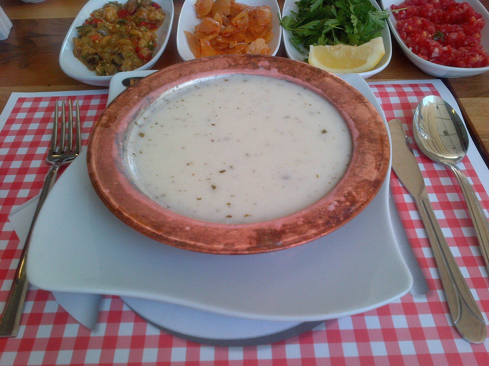

Return Homepage
Yayla Soup

Foto: Wikimedia.com
Yayla soup is a soup made with yogurt, rice, and mint. It is known for being both light and nutritious. It is prepared in almost every home in Anatolia and is prized for its ability to soothe the stomach.
Ingredients
- 2 glasses yogurt
- 2 tablespoons butter
- 1.5 tablespoons (heaping) flour
- lemon juice
- 1 egg yolk
- 1 teaspoon red peper flakes
- 6 cups of water
- 1 teacup rice
- 2 tablespoons olive oil
- 1 table spoon dried mint
How to Make It
- Add 2 cups of yogurt, 1.5 tablespoons of flour, and 2 tablespoons of lemon juice to the pot you’ll use to make Yayla soup, and stir until the mixture is smooth.
- After adding 1 egg yolk to the mixture, stir it again.
- Add 6 glasses of cold water and bring to a boil over medium heat.
- Once the soup starts to boil, add 1 tea glass of rice (which you've washed and drained) and let it come to a boil again.
- Meanwhile, heat 2 tablespoons each of olive oil and butter in a separate skillet. Add 1 tablespoon of dried mint, stir, and remove from the heat.
- Pour the oil you’ve prepared over the boiling soup. Add 1 teaspoon of red pepper flakes and 2 teaspoons of salt as well.
- Stir well, then turn off the heat.